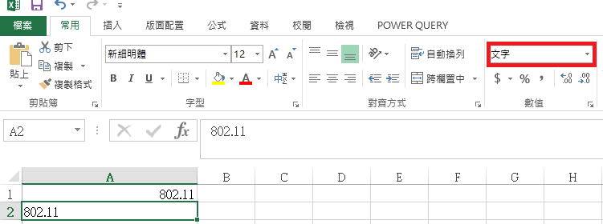

使用python程式parse一個Excel發生錯誤, 看了log發現下列訊息 TypeError: cannot concatenate ‘str’ and ‘float’ objects 後來查了一下Excel的儲存格有分為為數值和文字 格式設定為文字的數值在儲存格中會靠左對齊，而不是靠右對齊，而且通常會標有錯誤指標  參考 套用數值格式以修正文字格式數值 將數字格式化為文字 Please enable JavaScript to view the comments powered by Disqus. Blog comments powered by Disqus